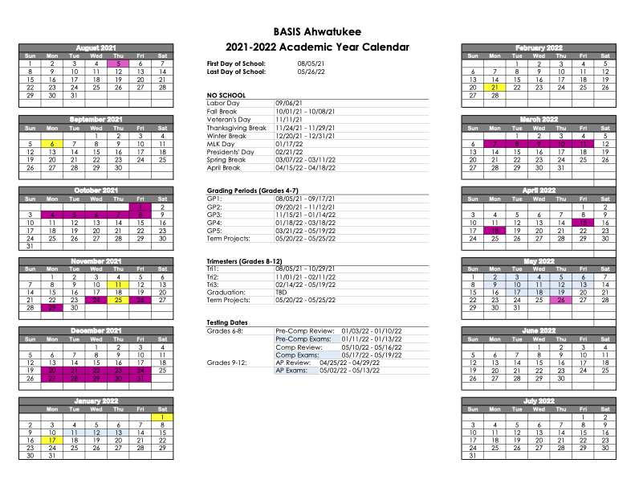

BASIS Ahwatukee

2021-2022 School Year Calendar

Achievements
As of 2020, Basis Ahwatukee is #67 in National Rankings, #10 in Arizona High Schools, #6 in Phoenix AZ Metro Area High Schools, #13 in Charter High Schools, and #142 in STEM High Schools
Basis.ed Alumni
BASIS Ahwatukee senior ANNIKA B. is the epitome of a well-rounded student. Her drive for success took her to the forefront of coronavirus- related research during the pandemic, and also led her to meet all the requirements to apply for the Congressional Awards—the highest honor for young Americans bestowed by the United States Congress. In 2019, Annika found out she was the recipient of a Congressional Award Bronze Medal. After finding out about the bronze, Annika decided to go for the gold. Applying for the gold is an incredible feat that requires 400 hours of volunteerism, 200 hours of personal development work, 200 hours of personal fitness, and a six-day, five-night research expedition. In fall 2020, Annika’s hard work paid off when she was among the brilliant and hard-working young Americans molecules that are currently being considered to treat COVID-19. “The program was extremely fast-paced and rigorous, but the experience was invaluable,” she says. “Being able to collaborate with peers from all over the world who were also passionate about learning and research was amazing.” Although Annika was busy winning medals, they were not the only programs in which she was involved. Toward the end of her junior year at BASIS Ahwatukee, Annika applied and was accepted to the virtual University of California, Santa Barbara (UCSB) Research Mentorship Program. In addition to conducting research, she completed several college courses, wrote a scientific paper, and presented her original findings in a symposium. She describes one of her greatest takeaways from the program, saying, “I learned a great deal about cures for viruses, as well as how, throughout the country, researchers are all working on different parts of finding a vaccine for COVID-19, each one focusing on their individual specialty.” This experience also profoundly impacted Annika’s career aspirations, as it made her aware of the different specialties within microbiology. She explains, “I am now passionate about spending my life researching to find cures and vaccines for diseases.”

BASIS Tucson North seniors KYRA S. and ALEX C. watched with concern as the onset of the COVID-19 pandemic impacted hospitals, schools, and work places, and brought uncertainty and anxiety into people’s lives. Since all after-school activities were suspended, they decided to use their free time to help others cope with the pandemic. After recruiting help from three other Tucson high school students, they began making masks for healthcare professionals. However, they soon saw there was a need for additional services. “We then realized that there were so many other groups of people that had been severely impacted by the pandemic, especially students and the immunocompromised,” says Kyra. First, the group began providing free grocery pickup and delivery for community members who were in the high-risk category for COVID-19. Once that was running smoothly, they turned their attention to another group that could benefit from support: students. “At the same time as all of this, schools were switching to online learning,” says Kyra. “We thought it would be beneficial for students to receive extra support... so we began offering free tutoring for K–12 kids across Tucson.” From there, the official STITCHES organization (Serving the Impacted Tucson Communities with Help, Encouragement, and Support) was born. Although STITCHES began to expand rapidly, they didn’t falter once, as all of the members were accustomed to balancing a challenging course load with outside activities and had previously held leadership roles for various school clubs. Collectively, Kyra, Alex, and the rest of the STITCHES team have tutored students from over 10 different schools, have provided groceries for community members, and have donated over 1,400 cloth masks to hospitals and other organizations. They even began distributing kits with hygiene products and food to homeless shelters in the area. Ultimately, Kyra says, “STITCHES has taught us that every person has been impacted by the pandemic in some way or another, and if we work together as a community, and each of us does our part, it makes the whole situation easier.”
New to BASIS Charter Schools – SPORK
BASIS Ahwatukee Campus